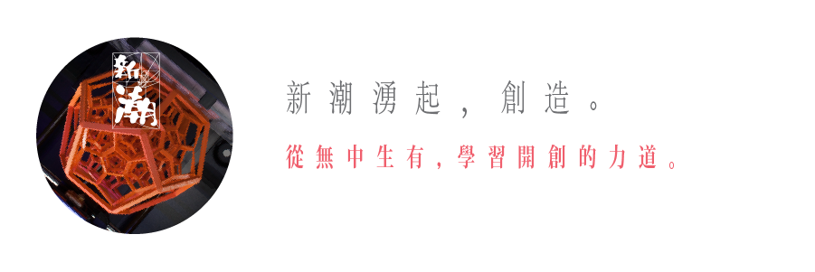
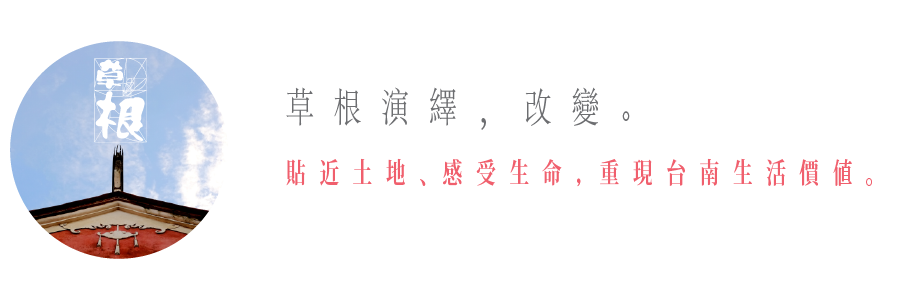
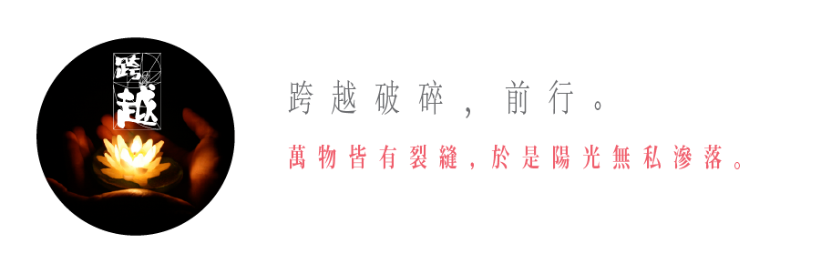

新思潮 The Era for New Thoughts
「匯流改變的力量，激盪思辨的浪潮」
這一年，台灣發生了許多事。
而時代的洪流將每個人身不由己地捲了進去。
我們可以選擇掙扎，或者任自漂流。
但願我們夠有勇氣，就能乘著這股洪流，卷起一道激浪。
在台灣，還有許多創新者、改革者、夢想家，用著自己的熱情與理想，努力將洪流導向一個更美好的未來。
有人試著從荒蕪之中找尋一線生機，試著破土而新生。
有人默默耕耘著台南這片文化沃土，保存深厚的底蘊。
有人則在哀慟的破碎中徒步前行著，傳播重生的希望。
TEDxTainan與你跨越過去的徬徨與傷痛，著手解決眼前的問題，開拓新的格局，屬於我們的世代！

這是一波不斷推進的城市浪潮，也是一群浪頭先鋒者，帶著堅毅的態度，勇敢衝撞現狀。先鋒開拓格局，讓我們得以最遼闊的視野，感受能量的衝擊與創造的脈動。
{{speakerBrief}}

在府城有一群草根默默深植，讓我們開始學會溫厚與踏實。在不斷的累積後，台南人沈澱了深厚的文化底藴，並在看似平凡的生活中，看見曙光，然後邁向期待。

動盪的時代，總是充斥瘡疤。這些接踵而至的事件，帶來哀慟的破碎。卻總有一群可貴的社會力量，腳踩瓦礫堆，用行動帶領我們跨越、看見裂縫外的暖陽。